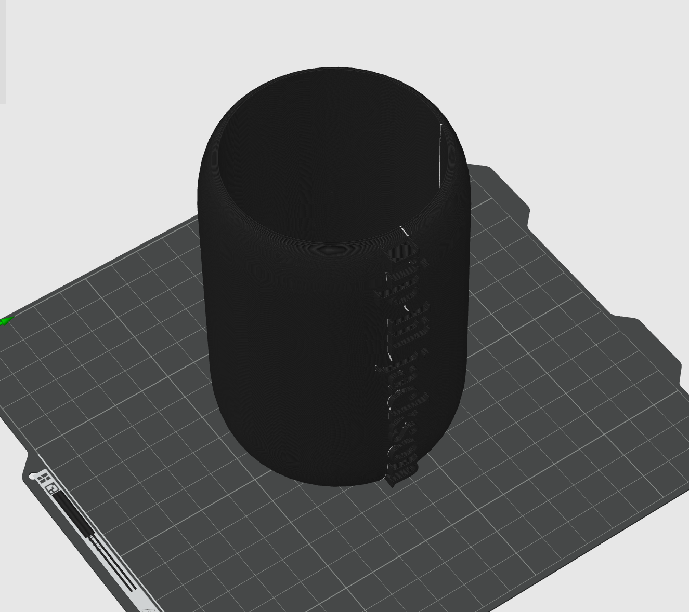

Made for the most common can size (66mm)
The standard can size for most cans is 66 millimeters in diameter, which is what this can holder is made to hold.
Read More
Gallery
Image 1
Image 2
Image 3
Frequently asked questions
First question?
The answer to the first question.
Second question?
The answer to the second question.
Third question?
The answer to the third question.